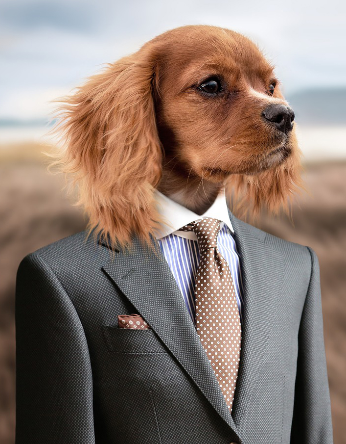

Josip Mužić

Welcome to my HomePage!
I'm thankful for your visit. I hope you find my website useful.
In this website I will be showing you my interests,
and the pros of having me work for you.
I will begin by showing you my resume, then proceed by showing you some
some pros of having me, and lastly I will show you some of my many hobbies
and introduce you to someone very special to me.
If you dont want to scroll, feel free to use the thingies on top.
Résumé
Download my Resume
My name is Josip Mužić.
I am currently a student in the Rochester Institute of Technology. I am a freshman, and I am loving the course I'm taking. If you want to know more about me, you can either scroll down and learn a bit more about me. Or you can download my brief resume located to the right.
I am currently a student in the Rochester Institute of Technology. I am a freshman, and I am loving the course I'm taking. If you want to know more about me, you can either scroll down and learn a bit more about me. Or you can download my brief resume located to the right.
Education
I studied 2 highschools in Mostar simultaneously,
one highschool was a Music Highschool, meanwhile, the other one was a
Grammar School.
Personal
You might be wondering who is this lovely looking girl in the picture.
Isnt this meant to be Josip's site? Well, that is true, but it wouldn't be
Josip's site if I didn't include her. She is someone amazing. She is someone that changed
his life for the better by a lot. She influenced him greatly, and made him always try to
be better.
Hobbies
VideoGames
Video games is probably the first hobby I ever picked up. It was my second biggest
pashion, right after music, this is why I would like to picture myself in videogame
development after I finish RIT.
Piano
I started playing the piano in 3rd grade when I was 9 years old. For the longest
time I wanted to pursue music as my career, but I realised what my financial situation
would be, so I decided to keep it as a hobby.
Photography
Photography is a relatively new hobby for me. I never had interest in it before.
Ever since I started the course in New Media Design I've grown fond of it.